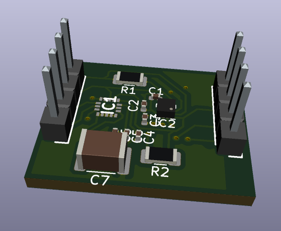
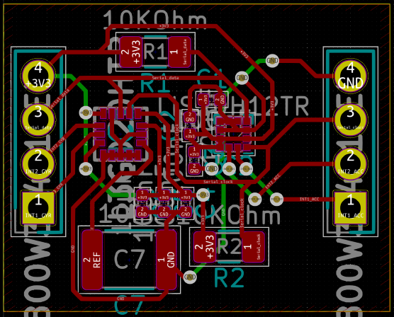
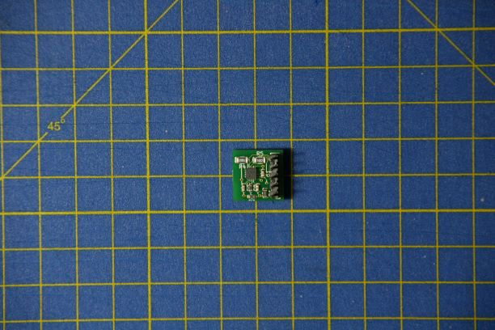
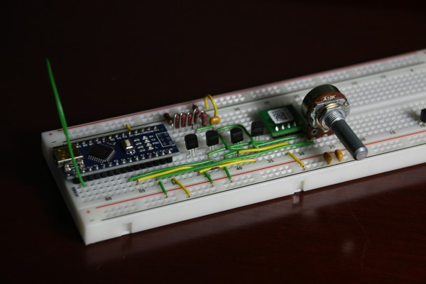

First revision of circuit
25/11/2020
Using the open-source circuit design tool "KiCAD", I have designed the block diagram of the circuit which will allow an Arduino to communicate with an IMU.

This first design gave me insight into how to make use of the manufacture's datasheet for a component to deduce its inputs and outputs, along with its power requirements.
Issue with the first revision
26/11/2020
The IMU used in the first revision design is no longer avaliable from the original supplier and will need to be replaced or found from a different supplier.
Reseraching alternate chips
I have researched a number of alternative options for the IMU and found two suitable ICs that are in resonable stock from the original supplier. These ICs have similar capabilities to the original IC, though are slightly newer designs.
Second revision of circuit
I have made a new revision of the circuit that makes use of one of the new ICs that are currently in stock. My next steps will be considering how the IC will communicate with the Arduino and how to supply power to the IC according to its datasheet
Second revision of circuit completed
I have added the required connections for communication and components for the voltage supply to the IC.

The process of designing extra versions furthered my experience with KiCAD and understanding component datasheets. The delays as a result of the component shortages and resultant delays caused a number of further problems, but the experience gained from having a PCB produce was worth the time spent on this stage.
Second revision components arrived
14/12/2020
I have received the components from the supplier and constructed the circuit. The IMU connects to the Arduino via I2C and uses the Arduino's regulated voltage supply for power.
The IMU is smaller than expected, making it very fragile. This made it very difficult to solder to as there are 12 pins within a 2mm by 2mm area, of which most need to be connected.

After managing to connect the IMU to the Arduino and the Arduino then to a computer, I have read back some of the data from the IMU before one of the critical pads fell off the IC.
The difficulty in soldering and the lack of any larger components being avaliable has resulted in the decision to design a PCB and have it printed. This will improve the durability of the circuit and ensure that it doesn't come appart.
This attempt to produce the circuit without a PCB proved the neccessity of a PCB while working with ICs in such small packages. At this stage, I was also able to get data from the IC, proving that the setup of Arduino and circuit was capable of data garthering.
Third revision of circuit
I have designed a third revision of the circuit using separate ICs for the acceleromter and gyroscope. This has vastly increased the complexity of the PCB as there are a number of communication traces which must be routed around each other.

The block diagram of the circuit will need to be turned into a layout that can then be printed. The use of breadboard pins on the PCB will simplify the connecting of the PCB to an Arduino.
Third revision of circuit completed
19/12/2020

This version makes use of independent gyroscope and accelerometers which increases the complexity of the design. I have produced the Gerber file for the layout of the PCB and the BOM for the required components. These will need to be sent to a PCB manufacture to be produced.

I have also cleaned up the block diagram of the circuit to make it easier to read and debug later if there are any issues.
The third version of the PCB is, while the closest to a PCB that might have functioned at this point, the most complicated and the one I would now, having brought it through to a full layout, want to complete again. The proximity of the traces makes it an arguable more sensitive to external noise.
Unable to get the components
18/1/2020
One of the components required for the third revision of the design is not avaliable from the PCB manufacture I have been looking at. This will require either looking at another manufacure or redesigning for another component. I will redesign to remove the reliance on two independent ICs as this will reduce the complexity of the project in the software stage and also in the the layout of the PCB.
Component shortages forced another redesign; I wanted to move on from this stage of development at this point. However, this final design learns from a number of mistakes I made in the previous designs and is almost certainatly very close to functioning the way I intended. The experience I gained from this last version has given me the confidence that I could redesign it now and produce a PCB capable of what the industry PCB I purchaced is capable of.
Changing the IC(s)
26/1/2021
With the lack of options and stock from the original PCB mnanufacture, I have researched other manufacures, though the shortage appears to be global currently. However, I have found a manufacture which allows the use of any components from a bulk re-saler that has stock of almost all components.
The components in the third revision appear to have been superceeded and are no longer avaliable. I have researched other options and designed a fourth revision of the circuit using a new IMU that is the latest in lower power technology and accuracy. This will make it more complicated to use as it is a 1.8V product, but should be more accurate than the alternatives.
While the choice of this 1.8V component made the electronics significatly more difficult, I am now happy that I made this choice; the prevelance of 1.8V components will only increase as electronics continue to become lower power. Using this IC forced me to learn about how to manage different voltage levels within a system and how to get them to interact correctly.
Fourth revision of circuit
28/1/2021
I have redesigned the circuit to use the new low power IC and used to datasheet to connect the pins that I will need access to. The new IC is slightly smaller than even one of the previous ICs, making the new PCB much smaller.
Fourth revision completed
I have finished the block diagram of the new circuit, selected the components for the PCB and created a BOM for it. I then uploaded the BOM to the manufacture's website to check avaliability of the components. I modified the Python script used to produce the BOM to fit the format required by the site.

All the components are currently avaliable through PCBTrain, an online PCB manufacturer.

The fourth and final version of the PCB shows the development I had made in the use of KiCAD to separate and simplify a circuit to its constituent components; the blocks in the block diagram show independent parts of the circuit clearly with their inputs and outputs clearly labelled. This compartmentalisation allows a quicker and better understanding of a circuit in reduced time, and ensures that debugging a circuit can be achieved in a relatively short period of time.
System overview concept
I have compiled my research into the theory behind the system and colated it to consider the areas that I still needed consider. This helped me to spot any areas that would be more compicated and reads that I didn't have sufficient research to resovle. This compilation has also made me more familiar to the concepts, which will make it eaasier to start writing the required software.
Areas I have covered include:
- Torque
- Angular momentum
- Moments of interia
- Solving for corrections using the thrust values
While I was unable to included this section of my reseach in the final artefact, it gave me insight into the Physics of such a system and the concepts required to make it possible; I might never have studied all of the required Physics without this project due to the complexity and specifisity of the concepts.
I2C communication
11/3/2021
I have installed and setup an environment in which to develop and deploy Arduino code to an Arduino to test the components required. I began this by researching and implemeting I2C communication of the Arduino; I wrote a simple sketch in which the communication line is initiallised and a transmission is conducted over the connection. I do not currently have any way of testing this code yet.
Testing the fourth revision
16/3/2021
The PCBs have arrived from the manufacture. I can now start to work on testing these and integrating them with the software. The PCBs fit into the breadboard with the Arduino and I used a 22 gauge solid core wire to connect the two together.

Using a multimeter, I check the voltages around the PCB to ensure that they were as expected. The supply voltage was reading back very low, so I increased the voltage at the top of the potential divider to try increase the supply voltage, which seemed to fix the issue.
Reading the first register
With the circuit connected to the Arduino, I used the I2C code I had already written to read the value back from the WHO_AM_I register which readback the correct value. However, the dynamic values from the sensors remained null.

At this point, I started to assume that all the work I had put into the PCB would finally pay off; this was not the case yet. However, in retrospect, this stage was a big accomplishment: I had designed, had manufactured and tested a PCB fully of my own making and was able to comunicate with it. Even though I was unable to get the data I wanted from it, being able to get through 90% of the process sucessfully first time is perhaps the accomplishment I am most proud of from this project.
Unable to read data registers
18/3/2021
At first I assumed the issue was with the votlage supply to the IC not being high enough, being too high or simply fluctuating too much. Solving this would require another redesign to add either a different voltage regulation method, or to add more capcitance between the supply and ground.

With no data coming in from the IC, I was just about ready to give up on continuing and took a week or so away from the project to allow the problems and frustrations to settle. From this, I hoped that a solution might present itself.
Voltage level shifter
11/4/2021
Having assumed that the issue was with feedback from the supply voltage from the Arduino and the communication lines causing invalid voltages being seen by the IC, I have researched, designed and made a voltage level shifter that should be able to solve the problem.

I started with a naive solution using four transistors in a loop to isolate each side and allow bi-directional communication. However, this design did not function as I had hoped. I tested each side of the shifter separately and found that they worked when independent from each other using an oscilloscope to view the output of the circuit. I discovered an issue with one of the resistors being the incorrect value, though fixing this had no bearing on the result of the test.

The voltage level shifter idea was the product of the week I had taken away from the project to let my thoughs settle. Looking back now, I am almost certain that this was part of the solution to my problems, but not the whole solution. For now though, it had given me hope and inspiration to continue with the project, and to learn a little more.
Changing to MOSFETs
18/4/2021
With the loop of BJT transistors being non-functional, I have returned to my research into the topic and found a diagram that makes use of MOSFETs to connect the two voltage levels. This method should work bi-directionally and only require one component per signal line.
MOSFETs installed
21/4/2021
I have remade the circuit using the MOSFETs and communicaiton between the Arduino and IMU functions correctly on static registers, though the same null values as before are seen in the sensors' dynamic register.

With the voltage level shifter idea brough to its final form, and no significant progress, I was once again with no clear direction forward and not a lot of motivation remaining. It was at this point I started to read beyond the parts of the datasheet I was more familiar with to try and find clues in a kind of desperate attempt to find the resons for the problems I was experiencing.
A possible break through
22/4/2021
I have discovered a line in the datasheet of the IMU that describes a register that must be set to move out of sleep mode and start the sensors. This explains the null data and also suggests that the setup I had before would have funcitoned just as well.

Another of what I now suspect to be the cause of the problems showed itself; I had misunderstood how the IC was designed to function and overlooked a number of setup steps I needed to take. Most of these had been the result of a misunderstanding due to the first version I had managed to get working for a short time with a different IC. This version had required no setup and data could be extracted from it with no initialisation.
Not quite that simple
27/4/2021
The fix to the sleep mode has not worked as I expected and has instead reduced the number of bytes I can read in any one go. I can now read and write to the registers however, so the MOSFET version is the most successful yet. The WHO_AM_I register continues to return the correct value.
Digital oscilloscope
28/4/2021
I have been looking into getting access to a digital oscilloscope to check that he I2C communicatin is happening as I expect. While it is likely that this is functioning correctly, it is one of the few things I have yet to check.
I have been unable to get access to a digital oscilloscope, so will need to assume that the I2C works and eleminate this variable some other way.
With my attemps at solving any software problems not solving anything, I started to look to other place the system might have problems. The hardware was the clear pair to the software, so this is where I next looked for problems. The attemped debugging of the hardware taught me a number of skills with oscilloscopes and making use of the original design to try and find any oversights. During this process I found a number of oversights I had made that I suspect are the root cause for all the issues I had.
The first of these was more an issue with my design philosophy in which I had limited the changes I could make to the circuit on the PCB to effectively nothing after it had been manufactured. I should have designed the PCB with a number of different components and structures to allow the inputs to the IC to be manipulated fully, compared to the full lack of control I had over these inputs in the version that I had made.
New inspirations for the software
6/5/2021
I have found a GitHub repositary and issue thread that document an commertial breadout board for the IMU I am using. I have tried this code with my PCB and found that it doesn't work either.
Eleminating variables
10/5/2021
Haing tried a number of different example softwares for the IMU, I have purchaced one of the commertial breakout boards for to eleminate this final variable. I have also tired the fourth revision PCB with two three different Arduino Nano's and an Arduino Every, none of which are able to get it to funciton.

Pre-made PCB
12/5/2021
I receive the pre-made PCB from Adafruit and have modified their example software to suit the outputs I need. The code prints the data form the sensors correctly.

I have written a program in Processing to process the data and turn it into rotations and movements for a cube. I will need to add a velocity display to this program. I might revist the fourth revision PCB if I find time.
Having found evidence and confidence in the errors and oversights I had found in my PCB, I no longer had time to redesign and have another manufactured. As such, I purchanced a pre-made board with the intention of trying to figure out the differences between it and the PCB I had made. The differences were more or less as I had suspected, showing that I had sucessfully diagnosed most of the errors from the PCB and correctly decided on solutions to them.
Using GitHub
27/5/2021
I have setup a GitHub repository to store and version the code I have written. This will allow me to revert to funcitonal versions and document any changes that I make.
The GitHub page is available at "github.com/TommyGymer/TVC-System". This is where I have stored all of the code used in this project and also logged all of the code changes beyond those that I felt where large enough for their own record entry.
I am using GitHub for its accessibility, ease of use and also wide spread use in the devlopement indeustry.
My use of GitHub was a neccessary one and learning the skills required to use it will allow me to fit well into a more industrial software development environment; these kinds of tools are used extensively in industry to allow a team to work on the same project.
Progress with data from the IMU
With the pre-made PCB, I have been able to pull the required data and read the data using a connected computer. I have been able to translate this data to a cube, though the movement did not sync with what was actually happening.
I have corrected a number of bugs in the software and am now able to observe the movement, though the measurements drift overtime and will need to be filtered in some way to correct for this.
Progress with the data from the IMU
27/5/2021 11:44PM
With the new pre-made PCB, I have been able to sucessfully pull the required data from it and read this data on connected computer. In a previous post, I was able to display a cube that moved randomly using this data. I recently found the issue; I had been interpreting an acceleration directly as a displacement (distance) which had resulted in seemingly random data with a magnitude similar to what I might have expected.
With this fixed, I have been able to get the cube in the Processing program to rotate in the same direction the Arduino and IMU, though the movement doesn't slow down. I recorded a video of this which is in the GitHub project.
Further progress with the data
5/7/2021 4:42PM
I have now fully implemented the Euler angle version of the two programs which correctly represent the rotation with in the limits of Euler angles. As such, the demo still suffers from gimble lock, which is an inherent part of using Euler angles. This version also has a demonstration video on the GitHub.
Solving this will require an implementation of Quaternions, which I had hoped would not be necessary as they will add significant complexity to the code.
Finalised the data processing
5/7/2021 4:45PM
I have finished implementing and testing the Quaterion implementation and am satified with the results I have seen. I have also added a servo to the system to test the Arduino's ability to control one. This required the use of an external power supply, though this could be easily replaced with a battery for the original intended implementation. A demonstration video of the final prototype is also available on the GitHub page.

The process of implementing Quaternions ended up being much simpler than expected, mostly due to the large number of well written sources I was able to find. In this version, I also implemented a servo controller that could control a servo using the calculated data about the rotation of the system. This required an external power source, which could have been replaced with a battery to make the prototype independent.
In conclusion, I have enjoyed learning the rather extensive list of skills required to design your own hardware and write software for it. The process has also taught me about some issues with the way in which I approach complex and intense problems like the one I set myself with this project; my initial reseach needed to be more indepth to ensure that I made fewer mistakes with time allocation to different tasks and to overall reduce the time spent on certain areas.
However, many of the issues and changes I would now make to the project were I to repeat it, I would have had no way of knowing without some experience in hardware (of which I had had none before this project). I am pleased with the way in which the software was developed and the results I saw from it. The inclusion of GitHub gave me something to learn in this area beside the Mathmatics required for the code (such as Quaternions) and should improve my code management in any subsequent projects.
Time management has also been a weak point of this project; the causes for this have been rather varied, though I feel that the updates to my Gantt charts show the issue well. Each of the two updates show large periods of time either waiting for components, or unexpected redesigns for component shortages. Another cause has been my underestimation for the complexity of the hardware I was trying to develop and overestimation of my motivation to continue working on it after facing road blocks and deviating from previous time schedules.
To have made it to the end of the project with a functionaly prototype, while not complete, as the most challenging project I have ever completed has been amazing. While the final artefact might not be as visually impresive as a model rocket, the skills learn, time spent, and resiliance I have built up over the project has gone far beyond what I expected when I began the project.
There are further improvements I would now like to make to the project which would include:
- Remaking the PCB
- Use Physics to calculate the correction required and send this to the servo
- Use the full suite of sensors on the IMU to make a full filter
- Track translation and allow flight profiles to be defined and followed
I am looking to use this project as the focus of a club for Year 9 to 11 to look at hardware, how to design it, and what can be done using hardware to get them more interested in Computer Science and Electronics. Some of the above list I might consider as potential topics to look into during this club.